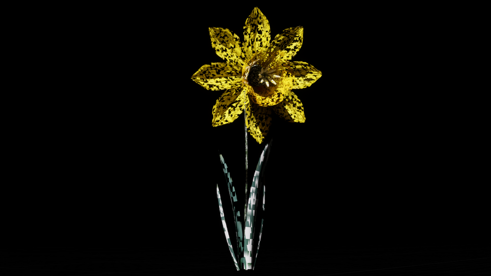
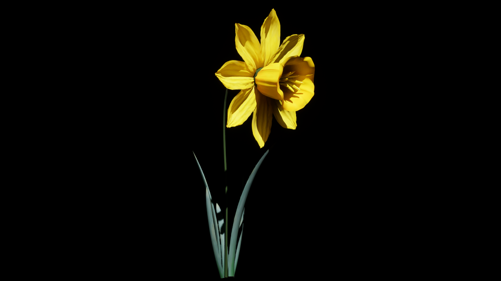
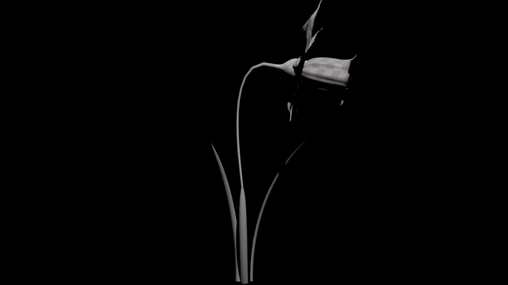
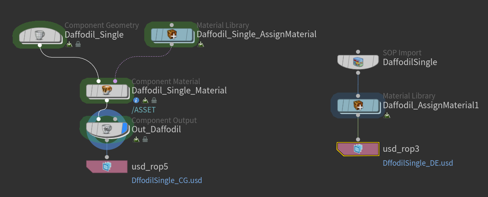
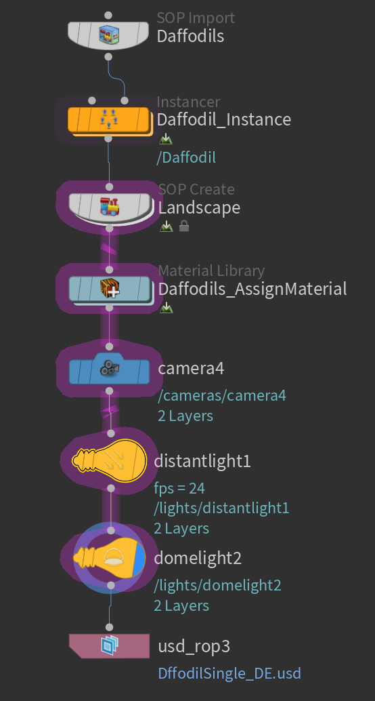
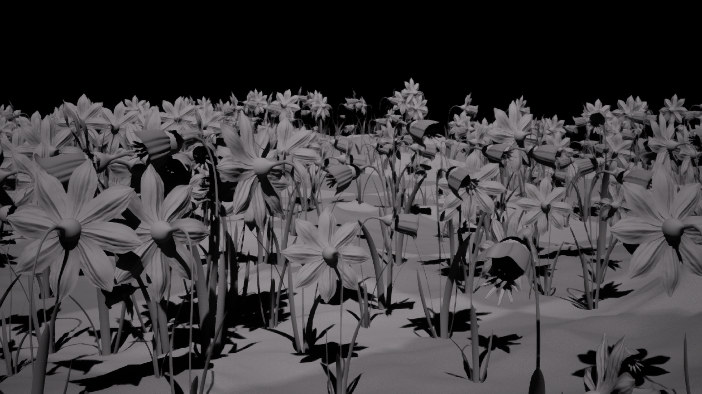
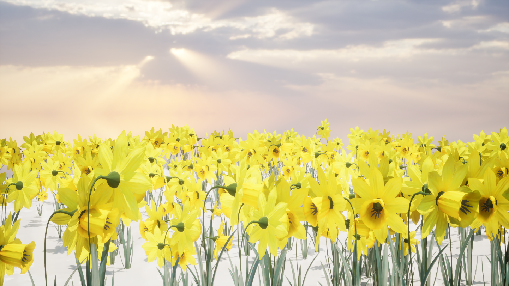

← 部落格 × Special Project | PART2


只有 Base Color 贴图被汇入


水仙花 Instance

Houdini 算图

Unreal 算图
第 4 周
第 4 周计划：
-
在 Houdini 中测试静态 USD variants
-
测试把静态 USD 档汇入 Unreal
USD 材质（Houdini 到 Unreal）
静态模型
我用这个网路和 MaterialX 输出 USD 档。
我试了两种把 USD 档汇入 Unreal 的方法。第一种是直接把 USD 档拖进 Content Drawer，它会产生一个包含所有内容的资料夹，以及一个 UsdPreviewSurface 主材质。结果 Unreal 中的贴图出现破绽，但取消勾选 Nanite 后就正常显示。我也注意到只有 Base Color 贴图被汇入，法线、粗糙度等其他贴图都不见了。

只有 Base Color 贴图被汇入
只有 Base Color 贴图被汇入

另外，如果只是把 USD 档拖进 Unreal 的 Content Drawer，会看不到其他 variants
第二种是用 USD Stage Actor 汇入 USD 档。问题是这里看不到任何已指定的材质，但它们其实有成功汇入，因为我能找到材质与贴图的路径。贴图也有同样的问题：只有 Base Color 被汇入。
接著我尝试只汇入一朵没有 variants 的水仙花，结果一样：仍然是灰色模型，只有 Base Color 贴图成功汇入。
接著我尝试用 UsdPreviewSurface 指定材质。这个材质没有 SSS，汇入 Unreal 后同样只有 Base Color 贴图被汇入，模型仍然是灰色，因为材质没有自动指定。

打开 USD Stage Editor 时，我可以切换不同的 variants。我在 Houdini 中是用 Color Correct 调整颜色，但由于一些限制，颜色无法传到 Unreal，只有 Base Color 贴图跟著模型过去。这些是全部的资产。
接著我用另一种方式把静态水仙花输出成 USD 档。结果都没有自动指定材质，但材质和 Base Color 贴图都有一起带过去。

Houdini 与 Unreal 中的水仙花 Instance
接著我在 Houdini 中做 instancing，把水仙花散布在 HeightField 上。我散布了 462 个点，并把有动画的水仙花复制上去。

水仙花 Instance
Height Field 地形
Houdini 算图
把 USD 档汇入 Unreal 时，材质还是没有显示，需要手动指定。不过其他部分，像摆放、图层、所有位置与缩放都是正确的。

Unreal 算图
接著我尝试把水仙花汇入另一个 Unreal 专案。材质有跟著模型过去，但只有水仙花有材质，地面仍然没有。同样的问题依旧：只有 Base Color 贴图被汇入。
